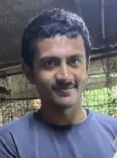

Job-Oriented VLSI Training & Internship
Analog, Digital & Physical Design
Call Now: 7349565249Octawave Technology is a Mangalore-based VLSI training and project-support organization focused on preparing students and aspiring engineers for careers in the semiconductor industry.
We provide job-oriented, industry-focused VLSI training with an emphasis on understanding concepts, developing practical skills and gaining hands-on experience with industry-relevant tools and design methodologies.
Our training covers key areas of VLSI including Analog VLSI Design, Analog Layout Design, Digital Design, Digital Verification and Physical Design.
Unlike a syllabus-focused approach, we emphasize practical learning, design exercises, projects, debugging, interview preparation and real-world VLSI problem solving.
Students get the opportunity to work on practical assignments and projects that help them understand how concepts learned in engineering translate into actual semiconductor design work.
We also support students with VLSI projects, internships, career guidance and interview preparation, helping them build the technical confidence required to pursue opportunities in the semiconductor industry.
Our objective is simple: to bridge the gap between academic education and the practical skills expected by VLSI and semiconductor companies.
Manjunath Shet is a VLSI professional and trainer with 13+ years of industry experience in semiconductor and VLSI design.
Industry exposure in Analog Design, Analog Validation, Analog Layout and Mixed-Signal VLSI.
US Patent 10,236,891
"Lock Time Measurement of Clock and Data Recovery Circuit"
Issued: March 19, 2019
Practical training in analog circuit design, transistor-level concepts and industry-oriented design techniques.
Hands-on training in analog layout, matching, common-centroid techniques, DRC, LVS and industry-relevant layout practices.
Practical digital design training covering Verilog, RTL concepts, simulation and interview preparation.

Canara College
Placed at Synopsys
Canara College
Placed at Karmic Design
Canara College
Placed at Sophrosyne Semiconductor
Canara College
Placed at Sophrosyne Semiconductor
Nitte
Placed at Texas Instruments
NMAMIT, Karkala
Placed at Karmic
MITE
Placed at Mirafra
Learn concepts and skills aligned with real VLSI industry requirements.
Focus on practical exercises, design, debugging and real-world problem solving.
Get practical exposure through projects and internship-oriented learning.
Technical guidance, resume support and VLSI interview preparation.
Location: Mangalore, Karnataka
Phone: 7349565249
Email: manjunathshet12@gmail.com
Interested in VLSI training, projects or internships?
Contact us to know more.